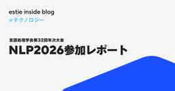
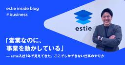
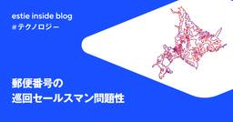
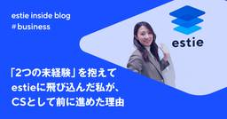
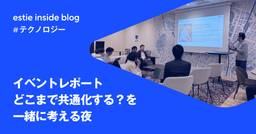
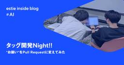

estie inside blog
https://www.estie.jp/blog/
estie inside blog
フィード

NLP2026（言語処理学会第32回年次大会）参加レポート
estie inside blog
はじめに こんにちは！estieでインターンをしています、東洋大学３年の Matsuri です。 株式会社estieは、3月9日(月)から13日(金)にかけて栃木県のライトキューブ宇都宮にて開催された言語処理学会第32回年次大会（NLP2026）にプラチナスポンサーとして参加し、ポスター発表とブース展示を行いました。当社による同大会への協賛は今年で3年目となります。 estieも企業ブースやってます！P会場ですのでぜひお越しください！ #NLP2026 pic.twitter.com/qsXVt75xNj— Nari / estie CTO | 不動産AI Lab (@tiwanari) 20…
2日前

「営業なのに、事業を動かしている」—— estie入社1年で見えてきた、ここでしかできない仕事のやり方
estie inside blog
🎙️この記事はPodcast「estie inside FM」でも配信中！声で聴きたい方はこちら👇 ▶ Spotifyで聴く ／ ▶ Apple Podcastで聴く ／ ▶ YouTube Musicで聴く こんにちは。estieでクライアントソリューション2部の営業マネージャーを担当している、杉田です。 estieに入社して、気づいたらもうすぐ1年が経とうとしています。「あっという間だった」という感覚もありつつ、振り返るといろんなことがありすぎて、1年とは思えないほど密度が濃かったなと感じています。 今回は、入社1年目を振り返りながら、estieという会社で働くことの面白さや、ここでしか味…
3日前

郵便番号の巡回セールスマン問題性
estie inside blog
こんにちは、estieのkageyuです。株式会社estieではよく不動産・地理データを見ています。社内ではGeoGuessrがたまに行われていて、市外局番を覚えておくと有利になります。このような「番号体系」が好きなので、今回は郵便番号の話をします。厳密な話をすると細かい話が大半になってしまうので、あまり厳密な話はしません。 電話番号や住所と同じく、郵便番号も構造を持っています。基本的には階層構造を持っており、都道府県-市区町村-町域の階層構造を基本としていますが、配達に特化した採番などがあります。 郵便番号の構造 1,2桁目 都道府県・地域区分局 1,2桁目はおおよそ都道府県と対応します。1…
3日前

「2つの未経験」を抱えてestieに飛び込んだ私が、CSとして前に進めた理由
estie inside blog
🎙️この記事はPodcast「estie inside FM」でも配信中！声で聴きたい方はこちら👇 ▶ Spotifyで聴く ／ ▶ Apple Podcastで聴く ／ ▶ YouTube Musicで聴く こんにちは。estieでカスタマーサクセス（サクセスエキスパートチーム）のマネージャーを担当している寺境と申します。 突然ですが、みなさんは転職先を選ぶとき、「業界未経験」や「職種未経験」という壁を感じたことはありますか？ 私がestieに入社したのは2024年2月。前職はレバレジーズ株式会社で、エンジニア特化の人材紹介サービス「レバテック」にて、約8年間働いていました。最初はtoCの求…
3日前
夢を持って働ける場所を探したら、商業用不動産とestieに辿り着いた
estie inside blog
【プロフィール】山下 琳太郎（やましたりんたろう） 2023年に新卒で受託開発企業に入社し、フロントエンド開発業務に従事。 2025年8月よりestieに入社。 岩成さんのCTO（Chief Tabemono Officer）の座を狙っている 今までのキャリア 新卒で受託開発を行うベンチャー企業にエンジニアとして入社しました。就活当時、kintone に代表されるノーコードツールの台頭もあり「言われたことだけをやるエンジニアはいらない」という風潮があったため、裁量のあるベンチャー企業に就職することは決めていました。 人が少なく、全部自分でなんとかするしかなかったので、ラストマンシップ的なものは…
4日前

【イベントレポート】どこまで共通化する？を一緒に考える夜
estie inside blog
2026年1月28日、【「どこまで共通化する？」を一緒に考える夜～エンタープライズSaaSの事例をもとに、共通化と個別化、開発の境界を議論しよう】を開催しました。 本イベントでは、コアとなるプロダクトを育てながら、顧客ごとにカスタマイズした機能を提供するときに「その境界をどう設計するか」を参加者の皆様と一緒に考える時間をつくりました。 当日はコンサルティングファームやエンジニアを中心としたゲストが参加。登壇セッションとグループワークを通じて、プロダクト開発とプロジェクト型開発のあいだで日々向き合うリアルな悩みや判断軸が数多く共有されました。 開催の背景・目的 「プロジェクトが終わったら、また次…
5日前

タッグ開発 Night!! "お願い" を Pull Request に変えてみた
estie inside blog
株式会社estie・デザインエンジニアのkkaruです。 先日、社内で「タッグ開発 Night」なるイベントを開催しました。 事業開発やCS、営業などに携わる面々がソフトウェアエンジニア（以下SWE）とタッグを組み、日ごろ取り扱うプロダクトの機能を自ら追加・改善する企画です。 計13組に参加いただき、大大大好評でした。 ちなみに "タッグ" といえば……サトシとピカチュウじゃないですか ฅ(◍◕ܫ◕◍)⚡️ ポケモン 30周年おめでとうございます！ 【公式】ポケモン30周年記念スペシャルムービー 課題感 商談やサポート対応を通じて、顧客の声（以下VoC）を集めているビジネス職のメンバー。 その…
6日前

【estie inside FM】2026年2月公開エピソードまとめ
estie inside blog
株式会社estieが送るポッドキャスト番組「estie inside FM」。2025年1月から開始し、金曜日に新しいエピソードをお届けしています。 各回のエピソードには、ユニークなゲストを迎え、estieの取り組みや個性的なメンバー、そして不動産業界のトレンドについてお届けしております。 今回は、2026年2月に配信した、3つのエピソードをご紹介します！まだ聴いていなかったエピソードや、気になるエピソードがあれば、ぜひご一聴ください。 50データを「自ら作る」estieのデータ部門の使命とは【執行役員 松田 × HR 青木】 （2026/2/5 公開） データマネジメント事業本部（DMG）の…
10日前
仕事における AI との付き合い方はプロダクト開発と同じ 〜小さく試す、改善を続ける〜
estie inside blog
estie VP of Products の勝田です。 最近、社内外で「AI をどう使っていますか？」と聞かれることが増えました。 SNS では毎日のように新しい活用事例が流れてきて、「まだこれをやっていないのは遅れている」といった声も目にします。 その一方で、実際に組織全体の業務フローを AI で劇的に変えた、という事例はまだ多くないのではないでしょうか。 こうした状況に対して私が思っていることを、プロダクトマネージャーとしての経験を交えて書いてみます。 このブログは「PM Blog Week」第6弾・5日目の記事です。3月24日、27日に開催予定のMeetupに向けた連載の一部としてお届け…
11日前
AI時代のプロダクト開発で、変わったこと、変わらなかったこと
estie inside blog
こんにちは、estie プロダクトマネージャーの齋藤 @shisaito です。 このブログは「PM Blog Week」第6弾・4日目の記事です。3月24日、27日に開催予定のMeetupに向けた連載の一部としてお届けしています。 ≪過去の PM Blog Week の記事は こちら ≫ AIエージェント、AIコーディングツール、使っていますか？ Cursor、Claude、Geminiなど、ここ1〜2年で選択肢が一気に増えました。PMでもコードを書かずにモックが作れる、APIを試せる、UIを生成できる。そんな驚き体験をした方も多いと思います。 私もその一人です。使えば使うほど、仕事の進め方…
12日前
AIとPMで回す 3倍速いプロトタイピング
estie inside blog
こんにちは。estieでプロダクトマネージャー（PM）をしている高橋です。 このブログは「PM Blog Week」第6弾・3日目の記事です。3月24日、27日に開催予定のMeetupに向けた連載の一部としてお届けしています。 ≪過去の PM Blog Week の記事は こちら ≫ 皆様におかれましては、ますますAI活用の進む毎日をお過ごしのことと存じます。 私もただただ、好奇心にまかせて使い倒すのが楽しくて仕方ない今日このごろです。たとえこの先、PMという職務が消滅するとしても。 小規模チームのPMが抱える課題 さて、現在estieのプロダクト開発は、小規模なチーム単位で進められています。…
12日前
新しい環境でコンテキスト理解をAIに手伝ってもらうための工夫
estie inside blog
こんにちは。estieでプロダクトマネージャー（PM）を務めているtamakenです。 このブログは「PM Blog Week」第6弾・2日目の記事です。3月24日、27日に開催予定のMeetupに向けた連載の一部としてお届けしています。 ≪過去の PM Blog Week の記事は こちら ≫ 私は3か月前にestieに入社しました。これまでのキャリアを活かして、現在はエンタープライズ領域で企画フェーズのプロジェクトに携わっているのですが、顧客やプロジェクト固有のコンテキストを理解することに特に苦労しました。本稿では苦労を軽減するためにAIを活用した工夫を紹介します。 コンテキスト理解に関す…
16日前
AIがUIとロジックを溶かすとき、SaaSに残るもの
estie inside blog
こんにちは。estieでプロダクトマネージャー（PM）をしている三橋です。 このブログは「PM Blog Week」第6弾・1日目の記事であり、3月24、27日に開催予定のMeetupに向けた連載の一部としてお届けしています。 ここ1〜2年のAIの進化のスピードには目を見張るものがあります。特に生成AIが登場してからは、 SaaSはAIエージェントに置き換わるのではないか？ PMの仕事はなくなるのではないか？ といった議論を目にする機会も増え、PMとしては刺激的な状況になってきていると感じています。 一方で、こうした議論は少し抽象的すぎる気もしています。AIがすごいのは分かります。でも、自分の…
19日前
0→1を走り切れるエンジニアは会社の未来を拓く。事業立ち上げで学んだ４つのこと
estie inside blog
エンジニアとして技術的な成長は確かに感じる。 でも、自分の仕事が事業成長につながり、会社の利益を生み出している実感が持てない。 新卒3年目の当時の私は、そんな悩みを抱えてベンチャー企業に転職し、新規事業の立ち上げに関わり始めました。 しかし立ち上げは、誰も知らない正解を追い求める日々です。成果が出ないまま走り続けるのは、やっぱり苦しい。 それでも走り切れた経験は、自分のキャリアを確実に前に進めてくれました。 PMFを目指すチームが前に進むにはどうしたらいいのか──過去の自分が欲しかったその答えを、4つの学びとしてまとめます。 【プロフィール】上久保 竜輝（かみくぼ りゅうき） 東京大学卒業後、…
1ヶ月前
NLP2026（言語処理学会第32回年次大会）にプラチナスポンサーとして協賛いたします
estie inside blog
Market Research GroupでSWEをしている本郷です。estieは、NLP2026（言語処理学会第32回年次大会） にプラチナスポンサーとして協賛いたします。 estieが協賛するのは今年で3年目となり、今回も一件の発表を予定しています。現地会場には数名のメンバーで参加予定ですので、ぜひお気軽にお声がけください。懇親会も企画していますので、そちらもぜひご参加ください！ NLP2026について NLP2026は、日本における自然言語処理および関連分野の研究発表や情報交換の場として、言語処理学会が年に一度開催している学会です。 日程：2026年3月9日（月）〜 3月13日（金） オ…
1ヶ月前
estie テックブログを始めます
estie inside blog
こんにちは、estie 取締役CTO の Nari (@tiwanari) です。今回、Zenn に 「estie テックブログ」の Publication を作り、技術広報をしていく場を開設しました。 これまでは estie inside blog において、技術の内容も会社の内容もあらゆることを幅広く扱ってきたこともあり、「技術の記事が見つけにくい」という声をいただいていました。今回の技術に絞ったテックブログ開設はこれを解消するものです（入社エントリーなど技術に限らないものは今までどおり estie inside blog に掲載していきます）。 なぜ技術発信を新たに始めるのか 初めまして…
1ヶ月前
前に進む産業の中で、当事者であり続けたい
estie inside blog
【プロフィール】山田 千秋（やまだ ちあき） 上智大学卒業後、ゼネコンに入社。その後、営業アウトソーシングを行う株式会社セレブリックスに入社。SMB領域を中心に、新規営業としてインサイドセールス・フィールドセールスの両方を経験。 2025年6月にestieへ参画し、現在はサクセスエキスパートを担当。 これまでのキャリア 大学卒業後、「カンボジアの街づくりに関わりたい」という思いから、カンボジアに支社を持つゼネコンに入社しました。 高校時代に外務省のプログラムで訪れたカンボジアに強く魅了され、大学時代は半年に一度のペースでボランティアサークルを通して現地でできた友人に会いに行っていました。 魅力…
1ヶ月前
【estie inside FM】2026年1月公開エピソードまとめ
estie inside blog
株式会社estieが送るポッドキャスト番組「estie inside FM」。2025年1月から開始し、毎週金曜日に新しいエピソードをお届けしています。 各回のエピソードには、ユニークなゲストを迎え、estieの取り組みや個性的なメンバー、そして不動産業界のトレンドについてお届けしております。 今回は、2026年1月に更新した、3つのエピソードをご紹介します！まだ聴いていなかったエピソードや、気になるエピソードがあれば、ぜひご一聴ください。 #47課題解決のために「全部やる」──クライアントソリューション統括本部が目指すもの【統括本部長 櫻井 × 代表 平井】 2026年1月最初のエピソードで…
1ヶ月前
「AIのPRはレビューが大変」の正体を分解してラクになる
estie inside blog
こんにちは！スタッフエンジニアの @kenkoooo です。 ここ1年で、開発の現場でAIを使う機会が一気に増えました。新規実装からテストコード、既存コードのリファクタまで、AIがコードを書いてくれる範囲は広く、チーム全体のスピード感も変わりつつあります。 一方で、よく聞く話として「AIが大量のプルリクを出してくるのでレビューが大変」というものがあります。しかし、レビューがつらくなる原因は量そのものではなく、レビューしやすい前提が揃っていないためであると考えています。 この記事では、AIが出してきたプルリクをレビューしづらい原因を考え、それらに対してどのように対処しているかを紹介します。 意図…
1ヶ月前
【都道府県別】特殊な住所・住居表示
estie inside blog
こんにちは。estieでデータクオリティーマネージャーをしているkageyuです。estieは不動産データをたくさん扱っており、その場所は住所を使って表すことが多いです。 不動産には「不動産登記番号」や最近国土交通省が整備しつつある「不動産ID」などが存在しますが、大抵の場合は住所と建物名を使って建物が指定されています。そのため、複数の不動産データを統合するとき、主に住所と建物名を使って突合します。 データクオリティーマネージャーとしては、突合処理で 住所が正しく正規化できているか？ 正規化の前後で情報が欠落していないか？ その住所は実在するのか？ などを確認しており、データを見ていると違和感…
2ヶ月前
現場に出て、一次情報から価値をつくる。デザインエンジニアとしてestieを選んだ理由
estie inside blog
【プロフィール】木田 峻介（きだ しゅんすけ） 芝浦工業大学デザイン工学部を卒業後、デザイナーとしてヤフー株式会社に新卒入社。バナーや駅ナカ広告などの販促物制作や、大規模サービスのUX/UIデザインを担当。ソフトウェア開発に携わる中で興味関心の範囲はディスカバリーからデリバリーまで広がり、現在はフロントエンド開発にも携わっている。 今までのキャリア 大学では、物理的に存在するプロダクトデザインを専攻し、デザインとは「課題解決」であるという考え方を学びました。その考え方に面白さとやりがいを感じ、新卒でヤフー株式会社にデザイナーとして入社し、社会人としてのキャリアをスタートしました。 ヤフー株式会…
2ヶ月前
インフレ時代のPMに求められる、顧客との向き合い方
estie inside blog
こんにちは。estieでプロダクトマネージャー（PM）をしている三橋です。 年始に聞いたとある話の中で、「インフレにどう適応するか」というテーマが強く印象に残りました。私は経済学者でも評論家でもないので、インフレそのものを論じるつもりはありません。ただ、マクロでもミクロでも、私たちを取り巻く経済環境が変わってきているのは事実であり、「インフレ適応」は、実はPMこそ真っ先に向き合うべきお題なのではないか、と最近強く感じています。 思い返せば、これまでの私のPMキャリアは、完全に「デフレ時代」の中にありました。価格は基本的に下がるもの。コストは抑えられるもの。そんな前提の中で、意思決定をしてきた感…
2ヶ月前
Terraformをモノレポ化した話 — tfactionを使ったプロダクト横断IaC運用の実践
estie inside blog
こんにちは、P2O（X: @hitsumabushi845）です。昨年11月から estie で SRE をしています。 inside blog では初めての投稿となります。 estie では、社外向け・社内向け問わず数多くのプロダクトが稼働しており、それらのインフラ全てを Terraform で管理しています。 Terraform で管理される数多くのインフラをどのように整理・運用するかは、各組織で様々な方法がとられていることかと思います。 estie では、tfaction を活用することで大量のプロダクトの IaC を纏めたモノレポを作成しました。 本記事ではその内容について紹介します。…
2ヶ月前
ワクワク駆動開発で選んだestieという環境
estie inside blog
【プロフィール】井上 真嘉（いのうえ さだひろ） 光学機器メーカーに新卒入社し、生産工程における人手作業の自動化・効率化を目的としたハードウェア・ソフトウェア開発に7年間従事。製造業の検査工程の課題解決に注力すべく、2020年にAIスタートアップへ転職し、ソフトウェア開発と機械学習モデル開発を担当。 2025年9月よりestieにソフトウェアエンジニアとして参画。 今までのキャリア 高専から大学院までの学生時代は、好奇心を原動力に興味を持った分野を探求してきました。専攻は電気電子・機械でしたが、特に「光」という自然界でも身近かつ重要なエネルギーに強く惹かれ、光学の研究に取り組んでいました。研究…
2ヶ月前
dbt-snowflakeにおけるPython modelの保守性を上げる実装パターン
estie inside blog
こんにちは。Data Management Group（以下、DMG）の宮崎です。主にデータパイプライン開発やWebサーバーサイド開発に携わりつつ、CIやデータ基盤の改善にも取り組んでいます。 DMGではデータパイプラインにdbtとSnowflakeを採用しています。また、Pythonの経験を持つメンバーが多いこともあり、dbt Python model（以下、Python model）を積極的に活用しています。このようなdbtデータパイプラインを開発する中で、Python modelの保守性・信頼性の課題も見えてきました。そこで、Python modelを含むdbtデータパイプラインを、継続…
2ヶ月前
事業と産業のど真ん中へ。次の挑戦として辿り着いた、estieという環境。
estie inside blog
【プロフィール】小林 純（こばやし じゅん） 青山学院大学卒業後、2022年4月に新卒でSansan株式会社に入社。中部支店にて東海・北陸エリア SMB領域の新規営業を担当。その後本社でエンタープライズ営業部に異動。大手企業向けの新規・既存営業に従事。 2025年8月よりestieに参画。アカウントエグゼクティブを務める。 今までのキャリア 新卒入社当時の Sansan は、名刺管理サービスを軸に事業としてはすでに一定の成長を遂げていながら、組織としてはまだ拡大の途上にあるフェーズでした。 仕組みは整っている一方で、「これが正解だ」と言い切れる型はまだ固まりきっていない。そんな独特のスピード感…
2ヶ月前
「子育てしながら、ちゃんと挑戦できる。estieで“働くママ”のリアル」
estie inside blog
はじめに 子育てをしながら転職を考えるとき、 「本当に両立できるのか」「今の働き方を手放していいのか」、そんな迷いは誰でも一度は感じると思います。 今回対談する misako と mishimaru も、まさにその一人でした。 それぞれ悩みながら検討を重ね、最終的に estie を選んでいます。 この対談では、「なぜ悩んだのか」「実際に働いてみてどう感じているのか」を、正直に話しています。 同じように悩んでいる“働くママ”にとって、少しでも参考になれば嬉しいです。 左：mishimaru、右：misako 転職を考えるとき、ママが一番悩むこと（対談） mishimaru 入社：2025年10月…
2ヶ月前
話しやすいから、連携しやすい ── estieのIS×マーケが自然に協働できる理由
estie inside blog
インサイドセールスとマーケティングの「連携しやすい」組織づくりとは何でしょうか。 estieでは、インサイドセールス担当の伊藤とマーケティング担当の千葉が、連携について日々向き合っています。今回は二人の対話を通じて、その背景や工夫を掘り下げていきます。 なぜestieのISとマーケは“うまくいっている”のか 伊藤：最近、インサイドセールス（以下IS）とマーケの連携が良く、お客様のニーズの把握や案件創出の面で効率よく活動できていると感じています。なぜこういう雰囲気や関係性がつくれているのかを言語化してみたいと思います。 千葉：ISもマーケもestieでは立ち上がって間もない組織ですよね。お客様の…
2ヶ月前
「リアルな世界」をエンジニアリングする。“確かな手触り”を求めてestieへ
estie inside blog
【プロフィール】松谷 勇史朗 2016年に株式会社スタメンに新卒入社。エンジニアとしてプロダクト開発に従事し、2020年よりCTOに就任。東証マザーズ（現・グロース）上場や複数の新規事業立ち上げを経験。約9年間の在籍を経て、2025年6月よりestieに参画。 今までのキャリア 新卒から約9年間、株式会社スタメンで過ごした時間は、まさに「濃密」の一言でした。 2016年、まだ学生インターンだった頃に飛び込み、創業期の混沌とした中で、コードを書くだけでなく、採用や組織マネジメントまで、会社が前に進むために必要なことは文字通り「なんでも」やりました。 会社の成長過程で責任を持って様々な役割を経験で…
2ヶ月前
デザインエンジニアMeetup! #4 イベントレポート
estie inside blog
2025年12月4日に「デザインエンジニアMeetup #4」を開催しました！ デザインとエンジニアリングを横断し、プロダクトのデリバリーやアイデア検証を高速に行う「デザインエンジニア」。この職種はまだ事例が少なく、業務内容やキャリアの実態が語られる機会は多くありません。そこでestieでは、現場の知見をオープンに共有できる場として、Meetupを継続的に開催しています。 第4回のテーマは「ドメイン特有のデザインとエンジニアリング」です。 estieでは、地図関連のUIをはじめドメインならではの機能が多く開発されています。“ドメイン特有のデザイン、それを実現するための設計・実装” を気軽に語り…
2ヶ月前